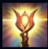
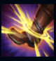
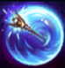
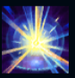

Lux
| Lux The Lady Of Luminosity | |
|---|---|
| Release date | 19.10.2010 |
| Class | Burst, Artillery |
| Positions | Middle, Support |
| Resource | Mana |
| Range type | Ranged |
| Adaptive type | Magic |
| Base statistics | |||
| Health | 490 – 1935 | Mana | 480 – 879.5 |
| Health regen. | 5.5 – 14.85 |
Mana regen. | 8 – 21.6 |
| Armor | 19 – 87 | Attack damage | 54 – 110.1 |
| Magic resist. | 30 – 38.5 | Crit. damage | 175% |
| Move. speed | 330 | Attack range | 550 |
Luxanna Crownguard vine din Demacia, un tărâm izolaționist unde abilitățile magice sunt privite cu teamă și suspiciune. Poate să manipuleze lumina după bunul ei plac, dar, din cauză că a fost forțată de mică să-și ascundă puterile pentru a nu pune în pericol onoarea nobilei sale familii, a crescut cu teama de a nu fi descoperită sau exilată. Cu toate astea, rezistența și optimismul lui Lux au ajutat-o să-și accepte talentele unice și să le folosească pe ascuns pentru a-și sluji patria. |  |
ILUMINARE Vrăjile lui Lux care provoacă daune încarcă ținta cu energie timp de 6 secunde. Următorul atac al lui Lux aprinde energia, provocându-i țintei daune magice bonus (în funcție de nivelul lui Lux). |
||
|---|---|---|---|---|
 |
CAPCANĂ DE LUMINĂ Lux lansează o sferă de lumină care imobilizează maximum două unități inamice și le provoacă daune. |
|||
 |
BARIERĂ PRISMATICĂ Lux își aruncă bagheta și curbează lumina din jurul tuturor țintelor aliate atinse, protejând-o de daunele suferite din partea inamicilor. |
|||
|  |
SINGULARITATE TRANSLUCIDĂ Lansează o anomalie de lumină cristalizată către o zonă, încetinind inamicii din apropiere. Lux poate detona anomalia pentru a provoca daune AoE inamicilor din zonă. |
|||
LUMINĂ INFINITĂ După ce strânge energie, Lux lansează o rază de lumină care le provoacă daune tuturor țintelor din zonă. În plus, abilitatea declanșează pasiva lui Lux și reînnoiește durata debuff-ului ''Iluminare''. |